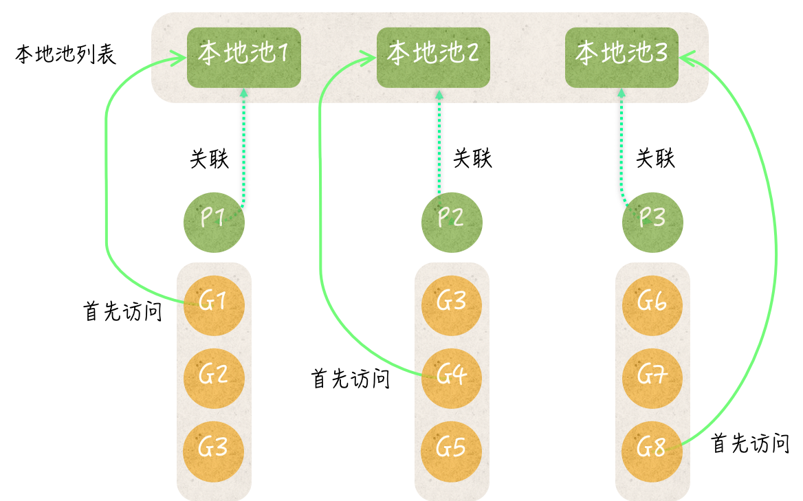
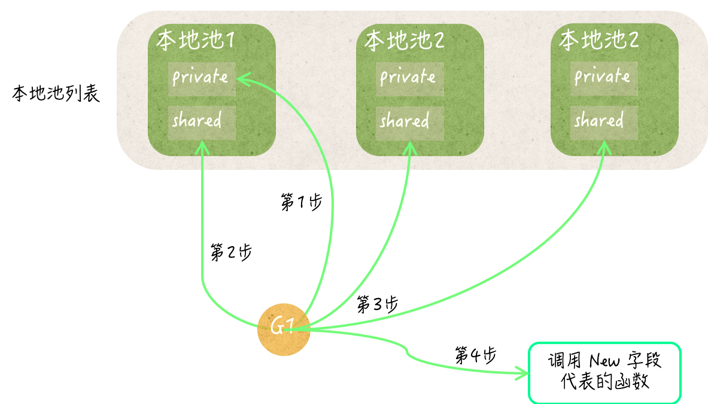

- 00 导读 写给0基础入门的Go语言学习者.md.html
- 00 导读 学习专栏的正确姿势.md.html
- 00 开篇词 跟着学，你也能成为Go语言高手.md.html
- 01 工作区和GOPATH.md.html
- 02 命令源码文件.md.html
- 03 库源码文件.md.html
- 04 程序实体的那些事儿（上）.md.html
- 05 程序实体的那些事儿（中）.md.html
- 06 程序实体的那些事儿 （下）.md.html
- 07 数组和切片.md.html
- 08 container包中的那些容器.md.html
- 09 字典的操作和约束.md.html
- 10 通道的基本操作.md.html
- 11 通道的高级玩法.md.html
- 12 使用函数的正确姿势.md.html
- 13 结构体及其方法的使用法门.md.html
- 14 接口类型的合理运用.md.html
- 15 关于指针的有限操作.md.html
- 16 go语句及其执行规则（上）.md.html
- 17 go语句及其执行规则（下）.md.html
- 18 if语句、for语句和switch语句.md.html
- 19 错误处理（上）.md.html
- 20 错误处理 （下）.md.html
- 21 panic函数、recover函数以及defer语句 （上）.md.html
- 22 panic函数、recover函数以及defer语句（下）.md.html
- 23 测试的基本规则和流程 （上）.md.html
- 24 测试的基本规则和流程（下）.md.html
- 25 更多的测试手法.md.html
- 26 sync.Mutex与sync.RWMutex.md.html
- 27 条件变量sync.Cond （上）.md.html
- 28 条件变量sync.Cond （下）.md.html
- 29 原子操作（上）.md.html
- 30 原子操作（下）.md.html
- 31 sync.WaitGroup和sync.Once.md.html
- 32 context.Context类型.md.html
- 33 临时对象池sync.Pool.md.html
- 34 并发安全字典sync.Map （上）.md.html
- 35 并发安全字典sync.Map (下).md.html
- 36 unicode与字符编码.md.html
- 37 strings包与字符串操作.md.html
- 38 bytes包与字节串操作（上）.md.html
- 39 bytes包与字节串操作（下）.md.html
- 40 io包中的接口和工具 （上）.md.html
- 41 io包中的接口和工具 （下）.md.html
- 42 bufio包中的数据类型 （上）.md.html
- 43 bufio包中的数据类型（下）.md.html
- 44 使用os包中的API （上）.md.html
- 45 使用os包中的API （下）.md.html
- 46 访问网络服务.md.html
- 47 基于HTTP协议的网络服务.md.html
- 48 程序性能分析基础（上）.md.html
- 49 程序性能分析基础（下）.md.html
- 尾声 愿你披荆斩棘，所向无敌.md.html
- 新年彩蛋 完整版思考题答案.md.html
- 捐赠
33 临时对象池sync.Pool
到目前为止，我们已经一起学习了Go语言标准库中最重要的那几个同步工具，这包括非常经典的互斥锁、读写锁、条件变量和原子操作，以及Go语言特有的几个同步工具：
sync/atomic.Value；sync.Once；sync.WaitGroupcontext.Context。
今天，我们来讲Go语言标准库中的另一个同步工具：sync.Pool。
sync.Pool类型可以被称为临时对象池，它的值可以被用来存储临时的对象。与Go语言的很多同步工具一样，sync.Pool类型也属于结构体类型，它的值在被真正使用之后，就不应该再被复制了。
这里的“临时对象”的意思是：不需要持久使用的某一类值。这类值对于程序来说可有可无，但如果有的话会明显更好。它们的创建和销毁可以在任何时候发生，并且完全不会影响到程序的功能。
同时，它们也应该是无需被区分的，其中的任何一个值都可以代替另一个。如果你的某类值完全满足上述条件，那么你就可以把它们存储到临时对象池中。
你可能已经想到了，我们可以把临时对象池当作针对某种数据的缓存来用。实际上，在我看来，临时对象池最主要的用途就在于此。
sync.Pool类型只有两个方法——Put和Get。Put用于在当前的池中存放临时对象，它接受一个interface{}类型的参数；而Get则被用于从当前的池中获取临时对象，它会返回一个interface{}类型的值。
更具体地说，这个类型的Get方法可能会从当前的池中删除掉任何一个值，然后把这个值作为结果返回。如果此时当前的池中没有任何值，那么这个方法就会使用当前池的New字段创建一个新值，并直接将其返回。
sync.Pool类型的New字段代表着创建临时对象的函数。它的类型是没有参数但有唯一结果的函数类型，即：func() interface{}。
这个函数是Get方法最后的临时对象获取手段。Get方法如果到了最后，仍然无法获取到一个值，那么就会调用该函数。该函数的结果值并不会被存入当前的临时对象池中，而是直接返回给Get方法的调用方。
这里的New字段的实际值需要我们在初始化临时对象池的时候就给定。否则，在我们调用它的Get方法的时候就有可能会得到nil。所以，sync.Pool类型并不是开箱即用的。不过，这个类型也就只有这么一个公开的字段，因此初始化起来也并不麻烦。
举个例子。标准库代码包fmt就使用到了sync.Pool类型。这个包会创建一个用于缓存某类临时对象的sync.Pool类型值，并将这个值赋给一个名为ppFree的变量。这类临时对象可以识别、格式化和暂存需要打印的内容。
var ppFree = sync.Pool{
New: func() interface{} { return new(pp) },
}
临时对象池ppFree的New字段在被调用的时候，总是会返回一个全新的pp类型值的指针（即临时对象）。这就保证了ppFree的Get方法总能返回一个可以包含需要打印内容的值。
pp类型是fmt包中的私有类型，它有很多实现了不同功能的方法。不过，这里的重点是，它的每一个值都是独立的、平等的和可重用的。
更具体地说，这些对象既互不干扰，又不会受到外部状态的影响。它们几乎只针对某个需要打印内容的缓冲区而已。由于
fmt包中的代码在真正使用这些临时对象之前，总是会先对其进行重置，所以它们并不在意取到的是哪一个临时对象。这就是临时对象的平等性的具体体现。
另外，这些代码在使用完临时对象之后，都会先抹掉其中已缓冲的内容，然后再把它存放到ppFree中。这样就为重用这类临时对象做好了准备。
众所周知的fmt.Println、fmt.Printf等打印函数都是如此使用ppFree，以及其中的临时对象的。因此，在程序同时执行很多的打印函数调用的时候，ppFree可以及时地把它缓存的临时对象提供给它们，以加快执行的速度。
而当程序在一段时间内不再执行打印函数调用时，ppFree中的临时对象又能够被及时地清理掉，以节省内存空间。
显然，在这个维度上，临时对象池可以帮助程序实现可伸缩性。这就是它的最大价值。
我想，到了这里你已经清楚了临时对象池的基本功能、使用方式、适用场景和存在意义。我们下面来讨论一下它的一些内部机制，这样，我们就可以更好地利用它做更多的事。
首先，我来问你一个问题。这个问题很可能也是你想问的。今天的问题是：为什么说临时对象池中的值会被及时地清理掉？
这里的典型回答是：因为，Go语言运行时系统中的垃圾回收器，所以在每次开始执行之前，都会对所有已创建的临时对象池中的值进行全面地清除。
问题解析
我在前面已经向你讲述了临时对象会在什么时候被创建，下面我再来详细说说它会在什么时候被销毁。
sync包在被初始化的时候，会向Go语言运行时系统注册一个函数，这个函数的功能就是清除所有已创建的临时对象池中的值。我们可以把它称为池清理函数。
一旦池清理函数被注册到了Go语言运行时系统，后者在每次即将执行垃圾回收时就都会执行前者。
另外，在sync包中还有一个包级私有的全局变量。这个变量代表了当前的程序中使用的所有临时对象池的汇总，它是元素类型为*sync.Pool的切片。我们可以称之为池汇总列表。
通常，在一个临时对象池的Put方法或Get方法第一次被调用的时候，这个池就会被添加到池汇总列表中。正因为如此，池清理函数总是能访问到所有正在被真正使用的临时对象池。
更具体地说，池清理函数会遍历池汇总列表。对于其中的每一个临时对象池，它都会先将池中所有的私有临时对象和共享临时对象列表都置为nil，然后再把这个池中的所有本地池列表都销毁掉。
最后，池清理函数会把池汇总列表重置为空的切片。如此一来，这些池中存储的临时对象就全部被清除干净了。
如果临时对象池以外的代码再无对它们的引用，那么在稍后的垃圾回收过程中，这些临时对象就会被当作垃圾销毁掉，它们占用的内存空间也会被回收以备他用。
以上，就是我对临时对象清理的进一步说明。首先需要记住的是，池清理函数和池汇总列表的含义，以及它们起到的关键作用。一旦理解了这些，那么在有人问到你这个问题的时候，你应该就可以从容地应对了。
不过，我们在这里还碰到了几个新的词，比如：私有临时对象、共享临时对象列表和本地池。这些都代表着什么呢？这就涉及了下面的问题。
知识扩展
问题1：临时对象池存储值所用的数据结构是怎样的？
在临时对象池中，有一个多层的数据结构。正因为有了它的存在，临时对象池才能够非常高效地存储大量的值。
这个数据结构的顶层，我们可以称之为本地池列表，不过更确切地说，它是一个数组。这个列表的长度，总是与Go语言调度器中的P的数量相同。
还记得吗？Go语言调度器中的P是processor的缩写，它指的是一种可以承载若干个G、且能够使这些G适时地与M进行对接，并得到真正运行的中介。
这里的G正是goroutine的缩写，而M则是machine的缩写，后者指代的是系统级的线程。正因为有了P的存在，G和M才能够进行灵活、高效的配对，从而实现强大的并发编程模型。
P存在的一个很重要的原因是为了分散并发程序的执行压力，而让临时对象池中的本地池列表的长度与P的数量相同的主要原因也是分散压力。这里所说的压力包括了存储和性能两个方面。在说明它们之前，我们先来探索一下临时对象池中的那个数据结构。
在本地池列表中的每个本地池都包含了三个字段（或者说组件），它们是：存储私有临时对象的字段private、代表了共享临时对象列表的字段shared，以及一个sync.Mutex类型的嵌入字段。
- sync.Pool中的本地池与各个G的对应关系
实际上，每个本地池都对应着一个P。我们都知道，一个goroutine要想真正运行就必须先与某个P产生关联。也就是说，一个正在运行的goroutine必然会关联着某个P。
在程序调用临时对象池的Put方法或Get方法的时候，总会先试图从该临时对象池的本地池列表中，获取与之对应的本地池，依据的就是与当前的goroutine关联的那个P的ID。
换句话说，一个临时对象池的Put方法或Get方法会获取到哪一个本地池，完全取决于调用它的代码所在的goroutine关联的那个P。
既然说到了这里，那么紧接着就会有下面这个问题。
问题 2：临时对象池是怎样利用内部数据结构来存取值的？
临时对象池的Put方法总会先试图把新的临时对象，存储到对应的本地池的private字段中，以便在后面获取临时对象的时候，可以快速地拿到一个可用的值。
只有当这个private字段已经存有某个值时，该方法才会去访问本地池的shared字段。
相应的，临时对象池的Get方法，总会先试图从对应的本地池的private字段处获取一个临时对象。只有当这个private字段的值为nil时，它才会去访问本地池的shared字段。
一个本地池的shared字段原则上可以被任何goroutine中的代码访问到，不论这个goroutine关联的是哪一个P。这也是我把它叫做共享临时对象列表的原因。
相比之下，一个本地池的private字段，只可能被与之对应的那个P所关联的goroutine中的代码访问到，所以可以说，它是P级私有的。
以临时对象池的Put方法为例，它一旦发现对应的本地池的private字段已存有值，就会去访问这个本地池的shared字段。当然，由于shared字段是共享的，所以此时必须受到互斥锁的保护。
还记得本地池嵌入的那个sync.Mutex类型的字段吗？它就是这里用到的互斥锁，也就是说，本地池本身就拥有互斥锁的功能。Put方法会在互斥锁的保护下，把新的临时对象追加到共享临时对象列表的末尾。
相应的，临时对象池的Get方法在发现对应本地池的private字段未存有值时，也会去访问后者的shared字段。它会在互斥锁的保护下，试图把该共享临时对象列表中的最后一个元素值取出并作为结果。
不过，这里的共享临时对象列表也可能是空的，这可能是由于这个本地池中的所有临时对象都已经被取走了，也可能是当前的临时对象池刚被清理过。
无论原因是什么，Get方法都会去访问当前的临时对象池中的所有本地池，它会去逐个搜索它们的共享临时对象列表。
只要发现某个共享临时对象列表中包含元素值，它就会把该列表的最后一个元素值取出并作为结果返回。
- 从sync.Pool中获取临时对象的步骤
当然了，即使这样也可能无法拿到一个可用的临时对象，比如，在所有的临时对象池都刚被大清洗的情况下就会是如此。
这时，Get方法就会使出最后的手段——调用可创建临时对象的那个函数。还记得吗？这个函数是由临时对象池的New字段代表的，并且需要我们在初始化临时对象池的时候给定。如果这个字段的值是nil，那么Get方法此时也只能返回nil了。
以上，就是我对这个问题的较完整回答。
总结
今天，我们一起讨论了另一个比较有用的同步工具——sync.Pool类型，它的值被我称为临时对象池。
临时对象池有一个New字段，我们在初始化这个池的时候最好给定它。临时对象池还拥有两个方法，即：Put和Get，它们分别被用于向池中存放临时对象，和从池中获取临时对象。
临时对象池中存储的每一个值都应该是独立的、平等的和可重用的。我们应该既不用关心从池中拿到的是哪一个值，也不用在意这个值是否已经被使用过。
要完全做到这两点，可能会需要我们额外地写一些代码。不过，这个代码量应该是微乎其微的，就像fmt包对临时对象池的用法那样。所以，在选用临时对象池的时候，我们必须要把它将要存储的值的特性考虑在内。
在临时对象池的内部，有一个多层的数据结构支撑着对临时对象的存储。它的顶层是本地池列表，其中包含了与某个P对应的那些本地池，并且其长度与P的数量总是相同的。
在每个本地池中，都包含一个私有的临时对象和一个共享的临时对象列表。前者只能被其对应的P所关联的那个goroutine中的代码访问到，而后者却没有这个约束。从另一个角度讲，前者用于临时对象的快速存取，而后者则用于临时对象的池内共享。
正因为有了这样的数据结构，临时对象池才能够有效地分散存储压力和性能压力。同时，又因为临时对象池的Get方法对这个数据结构的妙用，才使得其中的临时对象能够被高效地利用。比如，该方法有时候会从其他的本地池的共享临时对象列表中，“偷取”一个临时对象。
这样的内部结构和存取方式，让临时对象池成为了一个特点鲜明的同步工具。它存储的临时对象都应该是拥有较长生命周期的值，并且，这些值不应该被某个goroutine中的代码长期的持有和使用。
因此，临时对象池非常适合用作针对某种数据的缓存。从某种角度讲，临时对象池可以帮助程序实现可伸缩性，这也正是它的最大价值。
思考题
今天的思考题是：怎样保证一个临时对象池中总有比较充足的临时对象？
请从临时对象池的初始化和方法调用两个方面作答。必要时可以参考fmt包以及demo70.go文件中使用临时对象池的方式。
感谢你的收听，我们下次再见。
© 2019 - 2023 Liangliang Lee. Powered by gin and hexo-theme-book.